import pandas as pd
df = pd.read_csv('../datasets/drugs.csv')
print(df.head())Introduction to Data Science
Collecting, Exploring and Cleaning Data - Class 3
Giora Simchoni
gsimchoni@gmail.com and add #intro2ds in subject
Stat. and OR Department, TAU
Common Data Formats in Data Science
CSV: Comma Separated Values
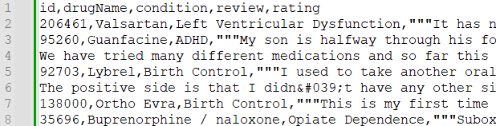
id drugName condition \
0 206461 Valsartan Left Ventricular Dysfunction
1 95260 Guanfacine ADHD
2 92703 Lybrel Birth Control
3 138000 Ortho Evra Birth Control
4 35696 Buprenorphine / naloxone Opiate Dependence
review rating
0 "It has no side effect, I take it in combinati... 9
1 "My son is halfway through his fourth week of ... 8
2 "I used to take another oral contraceptive, wh... 5
3 "This is my first time using any form of birth... 8
4 "Suboxone has completely turned my life around... 9 JSON: JavaScript Object Notation
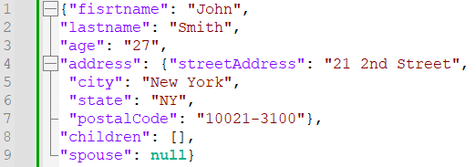
Plain Text
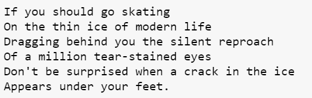
['If you should go skating,\n',
'On the thin ice of modern life,\n',
'Dragging behind you the silent reproach,\n',
'Of a million tear-stained eyes,\n',
"Don't be surprised when a crack in the ice,\n",
'Appears under your feet.']HTML
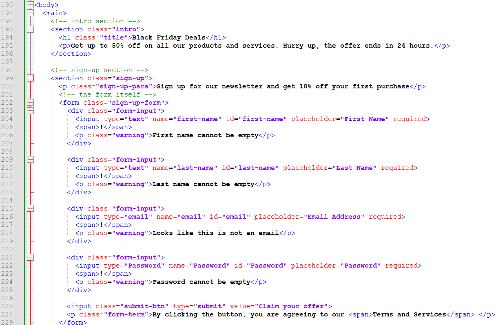
HTML
<!DOCTYPE html>
<html lang="en">
<head>
<meta charset="utf-8"/>
<meta content="IE=edge" http-equiv="X-UA-Compatible"/>
<meta content="width=device-width, initial-scale=1.0" name="viewport"/>
<title>
Sample HTML Code - NewsLetter Form
</title>
<style>
@import url("https://fonts.googleapis.com/css2?family=Poppins:wght@400;500;600;700&display=swap");
body {
display: flex;
justify-content: center;
padding: 3rem 0;
font-family: "Poppins", sans-serif;
font-size: 1rem;
color: white;
background-color: #ff7a7a;
}
main {
max-width: 350px;
display: flex;
flex-direction: column;
align-items: center;
}
.intro {
display: flex;
flex-direction: column;
justify-content: center;
align-items: center;
text-align: center;
width: 100%;
margin-bottom: 3rem;
}
.title {
padding: 1rem;
font-size: 1.75rem;
}
.sign-up {
width: 100%;
}
.sign-up-para {
padding: 1rem 5rem;
margin-bottom: 1.75rem;
border-radius: 0.8rem;
box-shadow: 0 8px 0px rgba(0 0 0/0.15);
background-color: #7138cc;
text-align: center;
}
.sign-up-form {
display: flex;
flex-direction: column;
align-items: center;
padding: 1.2rem;
border-radius: 0.8rem;
box-shadow: 0 8px 0px rgba(0 0 0/0.15);
color: #b9b6d3;
background-color: white;
}
.form-input {
width: 100%;
margin-bottom: 1em;
position: relative;
}
.form-input span {
position: absolute;
top: 10%;
right: 0;
padding: 0 0.65em;
border-radius: 50%;
background-color: #ff7a7a;
color: white;
display: none;
}
.form-input.warning span {
display: inline-block;
}
.form-input input {
width: calc(100% - 20px);
padding: 10px;
border: 2px solid rgba(185, 182, 211, 0.25);
border-radius: 0.5em;
font-weight: 600;
color: #3e3c49;
}
.form-input input:focus {
outline: none;
border: 2px solid #b9b6d3;
}
.form-input.warning input {
border: 2px solid #ff7a7a;
}
.form-input p {
margin: 0.2em 0.75em 0 0;
display: none;
font-size: 0.75rem;
text-align: right;
font-style: italic;
color: #ff7a7a;
}
.form-input.warning p {
display: block;
}
.submit-btn {
cursor: pointer;
width: 100%;
padding: 1em;
margin-bottom: 1em;
border: none;
border-bottom: 5px solid #31bf81;
border-radius: 0.5em;
background-color: #38cc8c;
color: white;
font-weight: 600;
text-transform: uppercase;
}
.submit-btn:hover {
background-color: #5dd5a1;
}
.form-term {
margin-bottom: 0.75em;
font-size: 0.8rem;
text-align: center;
}
.form-term span {
font-weight: 700;
color: #ff7a7a;
}
@media (min-width: 768px) {
body {
align-items: center;
min-height: 100vh;
}
main {
max-width: 100vw;
flex-direction: row;
justify-content: center;
}
.intro {
align-items: flex-start;
text-align: left;
width: 45%;
margin-right: 1rem;
}
.title {
padding: 0;
margin-bottom: 2rem;
font-size: 3rem;
line-height: 1.25em;
}
.sign-up {
width: 45%;
}
.sign-up-form {
padding: 1.75rem;
}
.sign-up-form input {
padding-left: 1.5em;
}
}
</style>
</head>
<body>
<main>
<!-- intro section -->
<section class="intro">
<h1 class="title">
Black Friday Deals
</h1>
<p>
Get up to 50% off on all our products and services. Hurry up, the offer ends in 24 hours.
</p>
</section>
<!-- sign-up section -->
<section class="sign-up">
<p class="sign-up-para">
Sign up for our newsletter and get 10% off your first purchase
</p>
<!-- the form itself -->
<form class="sign-up-form">
<div class="form-input">
<input id="first-name" name="first-name" placeholder="First Name" required="" type="text"/>
<span>
!
</span>
<p class="warning">
First name cannot be empty
</p>
</div>
<div class="form-input">
<input id="last-name" name="last-name" placeholder="Last Name" required="" type="text"/>
<span>
!
</span>
<p class="warning">
Last name cannot be empty
</p>
</div>
<div class="form-input">
<input id="email" name="email" placeholder="Email Address" required="" type="email"/>
<span>
!
</span>
<p class="warning">
Looks like this is not an email
</p>
</div>
<div class="form-input">
<input id="Password" name="Password" placeholder="Password" required="" type="Password"/>
<span>
!
</span>
<p class="warning">
Password cannot be empty
</p>
</div>
<input class="submit-btn" type="submit" value="Claim your offer"/>
<p class="form-term">
By clicking the button, you are agreeing to our
<span>
Terms and Services
</span>
</p>
</form>
</section>
</main>
</body>
</html>Collecting Data
Where do(es) data come from?
- Then: Manual Curation
- Now: Automatic Curation
Then: Manual Curation (I)
If your parents have not taken note, anywhere, of how tall you were at the age of 1 - we may never be able to extract this information.
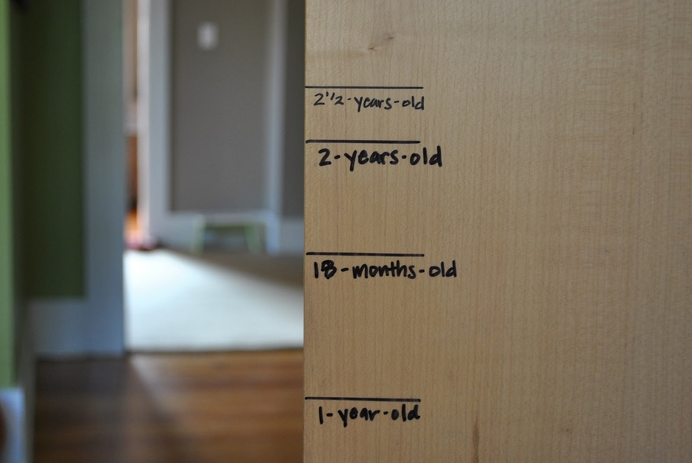Then: Manual Curation (II)
If the US government had not seen fit to estimate and record the level of alcohol consumption of its citizens, we would never have known.
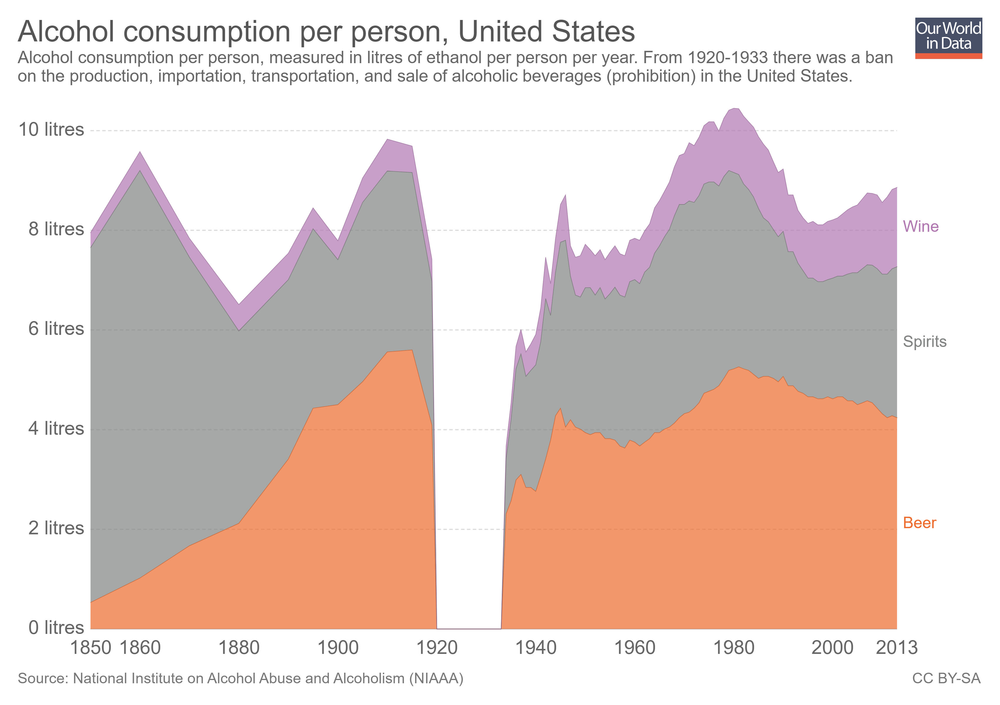Now: Automatic Curation (I)
Have you ever opened up an Internet browser, searched for “Amazon”, clicked on amazon.com and scrolled around to check the price of a T-shirt? You don’t have to be logged in. You don’t have to buy. You are data.
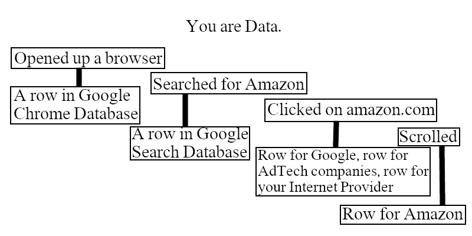Web Scraping
- Public APIs
- Beautiful Soup
Public APIs (I)
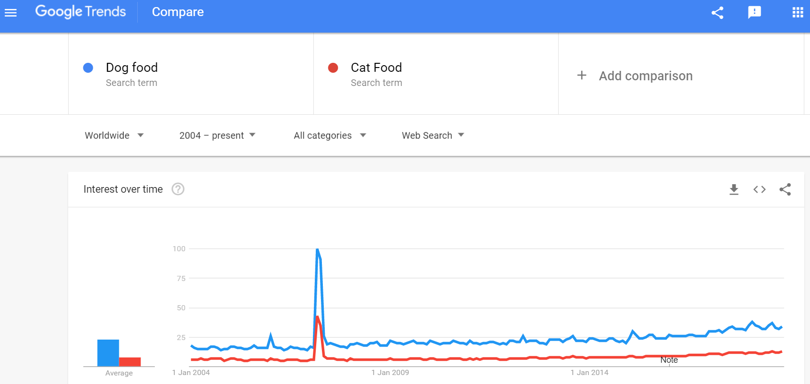Beautiful Soup
You may not even need an API. Would you look to have all the Beatles records in a single table on your machine?
The following code scrapes the Wikipedia page for the and creates a table, out of “thin air”. See more advanced examples in recitation.
albums = dict()
id = 0
albums[id] = dict()
tables = soup.find_all('table')
for table in tables:
caption = table.find('caption')
if caption is not None:
header = caption.get_text()
if re.match(re.compile('^List of(.+?)albums'), header):
rows = table.find_all('tr')
for row in rows:
title_col = row.find('th')
if title_col is not None and 'scope' in title_col.attrs and\
title_col.attrs['scope'] == 'row':
title_cell = title_col.find('a')
if title_cell is not None and title_cell.attrs is not None and\
'title' in title_cell.attrs:
albums[id]['name'] = title_cell.attrs['title']
release_col = row.find('td')
release_date, release_label = get_release_details(release_col)
if release_date is not None or release_label is not None:
albums[id]['release_date'] = release_date
albums[id]['release_label'] = release_label
id += 1
albums[id] = dict()| name | release_date | release_label | |
|---|---|---|---|
| 0 | Please Please Me | 22 March 1963 | Parlophone |
| 1 | With the Beatles | 22 November 1963 | Parlophone (UK), Capitol (Canada), Odeon (France) |
| 2 | A Hard Day's Night (album) | 10 July 1964 | Parlophone |
| 3 | Beatles for Sale | 4 December 1964 | Parlophone |
| 4 | Help! | 6 August 1965 | Parlophone |
Small Data, Big Data
What’s in a name?
These definitions are constantly changing.
- “Everything processed in Excel is small data.” (Rufus Pollock, The Guardian)
- “[Big Data] is data so large it does not fit in main memory” (Leskovec et al., Mining of Massive Datasets)
Or maybe we should define the size of our data according how easy it is to process and understand it?
What’s in a name? (II)
The actual definition should probably merge both of the above.
- Excel can fit 1M rows, 16K columns of double numbers. Try loading a matrix such as this into Matlab, Python or R, multiply and invert it - you can’t. So isn’t that Big?
- Facebook generates 4 Petabytes of data, daily. That’s 4K Terabytes or 4M Gigabytes. (Brandwatch.com) But a Facebook Data Scientist in daily life typically needs only a copy of some of these data, which fits in her PC. Isn’t that small?
Web data is Big Data
We can all agree this is big: (Domo.com)
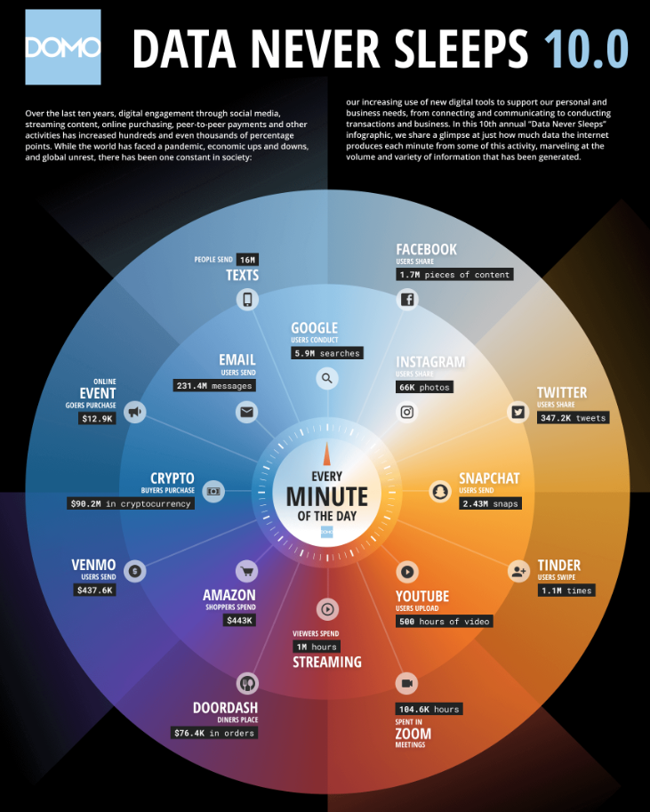Exploring Data: Basic Plots
Boxplot

Swarmplot
Histogram
Density Plot
Density plot: kernel density estimation / convolution
The way to get a smooth estimate of the distribution in density plot is by defining a kernel which “smoothes” the data. Mathematically we define a kernel weight function \(w: \mathbb{R} \to \mathbb{R}^+\) as:
- Non-negative and symmetric: \(w(x) = w(-x)\)
- Integrates to 1: \(\int_{\mathbb{R}} w(x)dx = 1\)
And then the density kernel estimate is: \(J(x) = \frac{1}{n} \cdot \sum_{i=1}^n w(x_i - x)\).
Nice property: \(\int_{\mathbb{R}} J(x)dx = 1\)
- Wide \(w\): smooth estimate, but it may not reflect the real data
- Narrow \(w\): very non-smooth description
For example smoothing this same dataset with too narrow or too wide window:
Code
plt.figure(figsize =(14, 5))
plt.subplot(1, 3, 1)
sns.kdeplot(X, bw=0.1)
plt.ylabel('Density')
plt.xlabel('X')
plt.title('Width=0.1: Too narrow')
plt.subplot(1, 3, 2)
sns.kdeplot(X, bw=1)
plt.ylabel('Density')
plt.xlabel('X')
plt.title('Width=1: About right')
plt.subplot(1, 3, 3)
sns.kdeplot(X, bw=10)
plt.ylabel('Density')
plt.xlabel('X')
plt.title('Width=10: Too wide')
plt.show()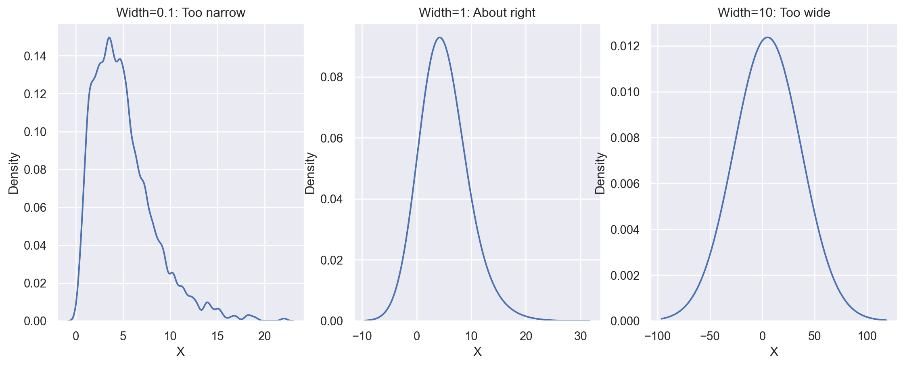
Scatterplot
What can we learn from simple plots?
Look at outliers:
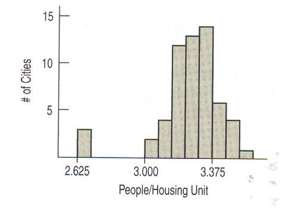
See the shape and tail direction:
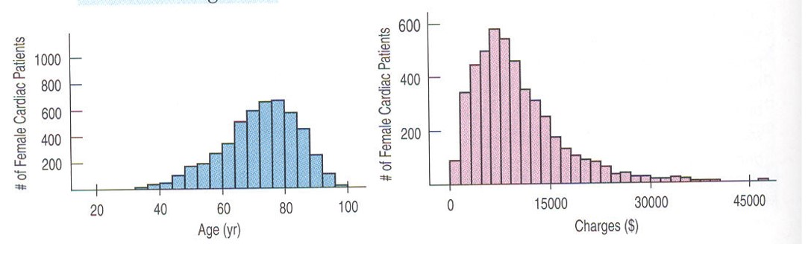
Exploring Data: Summary Statistics
Location
“Where is this X located? Where is the central mass?”
- Mean of empirical distribution (=average): \[Mean(X) = \bar{X} = \frac{1}{N}\sum\limits_{i=1}^N X_i\]
- Median: \[Med(X) = m\space s.t. \space P(X \leq m) = P(X \geq m) = 0.5\]
- Mode: \[Mode(X) = Most \space frequent \space value \space in \space a \space dataset\]
mean = np.mean(X)
median = np.median(X)
hist, _ = np.histogram(X, bins=range(20))
mode = list(range(20))[hist.argsort()[::-1][0]]
plt.figure(figsize= (4,4))
sns.distplot(X, bins = range(20), kde = False)
plt.plot([mean, mean], [0, 160], linewidth=2, color='r')
plt.plot([median, median], [0, 160], linewidth=2, color='g')
plt.plot([mode, mode], [0, 160], linewidth=2, color='b')
plt.legend({'Mean':mean,'Median':median,'Mode':mode})
plt.xlabel('X')
plt.ylabel('Frequency')
plt.show()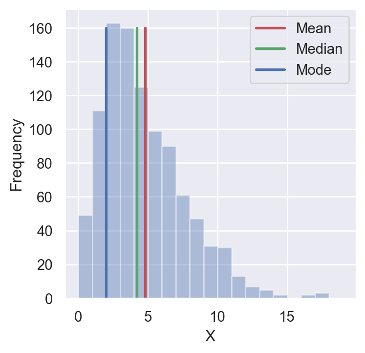
Dispersion
“Is X widely spread out? Does it concentrate narrowly around the mean?”
- Quantiles/Percentiles: \[Q(X, q) = v\space s.t. \space P(X \leq v) = 1-P(X \geq v) = q\]
- Range: \[Range(X) = Max(X) - Min(X)\]
- Inter-Quartile-Range: \[IQR(X) = Q(X, 0.75) - Q(X, 0.25)\]
Dispersion
- (Empirical) Variance: \[Var(X) = \frac{1}{N}\sum\limits_{i=1}^N (X_i - Mean(X))^2\]
- Standard Deviation: \[STD(X) = \sqrt{Var(X)}\]
print(f'90th percentile: {np.percentile(X, 90) :.2f}')
print(f'Range: {np.max(X) - np.min(X) :.2f}')
print(f'IQR: {np.percentile(X, 75) - np.percentile(X, 25) :.2f}')
print(f'Variance: {np.var(X) :.2f}')
print(f'Standard Deviation: {np.std(X) :.2f}')90th percentile: 9.32
Range: 20.22
IQR: 3.93
Variance: 9.46
Standard Deviation: 3.08Shape
“Is X symmetric or not? How ‘tailed’ is it?”
- Skewness: \[Skew(X) = \frac{1}{N}\frac{\sum\limits_{i=1}^N (X_i - Mean(X))^3}{STD(X)^3}\]
Advanced Visualization
Minard’s Napoleon March

Heatmaps
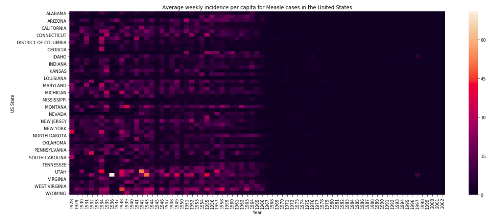Spotify: Total Eclipse of the Heart
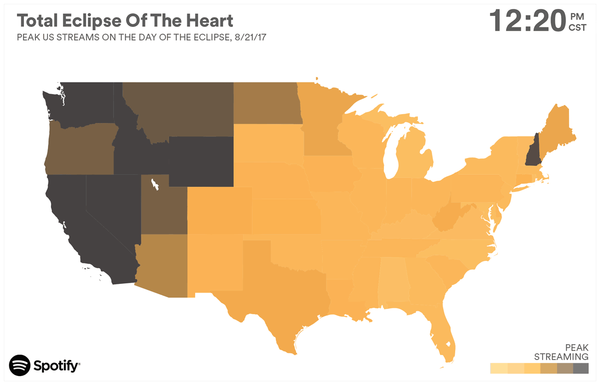Chernoff Faces
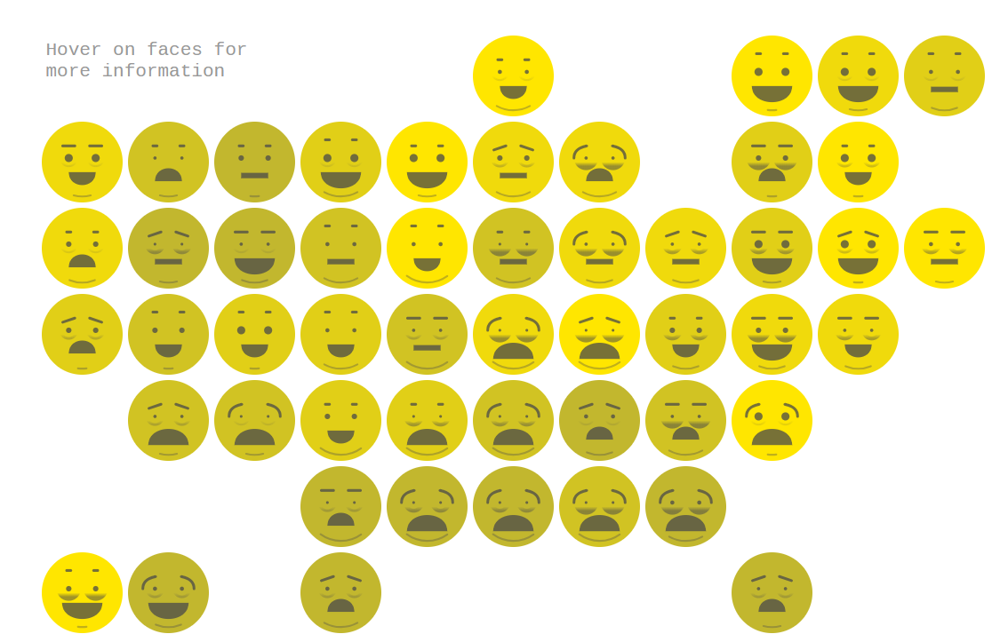Ridge plot (a.k.a Joy plot)

Flowing Data: A Day in the Life of Americans
Pudding: Women’s Pockets (and every single post on their site!)
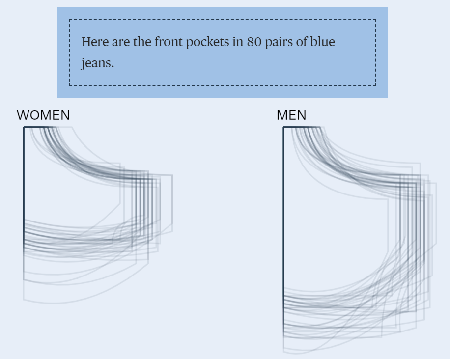The Gapminder story
The history of the world encapsulated in a simple visualization:
Dangers of Dirty Data
What could be dirty about data?
- The data itself
- The data’s structure
The data itself: Outliers
- Numerical Outliers: This is a histogram of random ~2.3 million transactions on ebay US website in over a few weeks in 2013 (source):
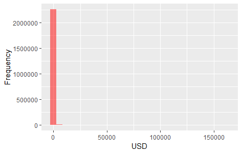
- Textual Outliers: The Blog Authorship Corpus consists of 19K posts by bloggers from blogger.com in 2004. These are actual words used in the 10-20 age group:
aaaaaaaaaaaaaaaaaaaaaargh, lolzi, jfjgfjhgjhfjgfjf, roflmfao, duuuuuuh, walang, dunno
The data itself: Missing data
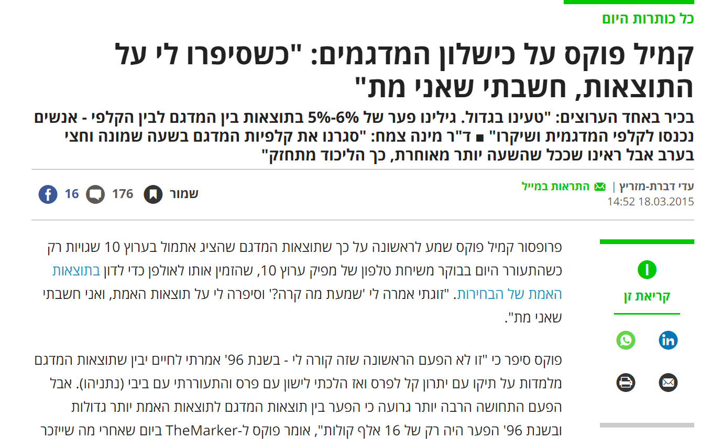
The data’s structure
In a word: Excel.
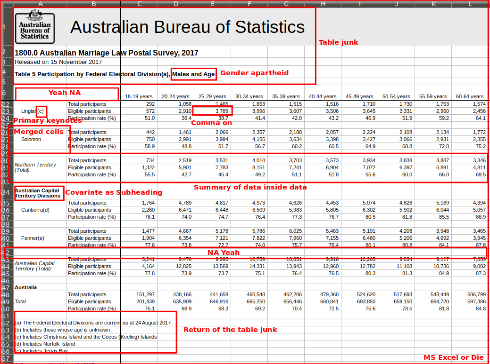Spreadsheet Blunder
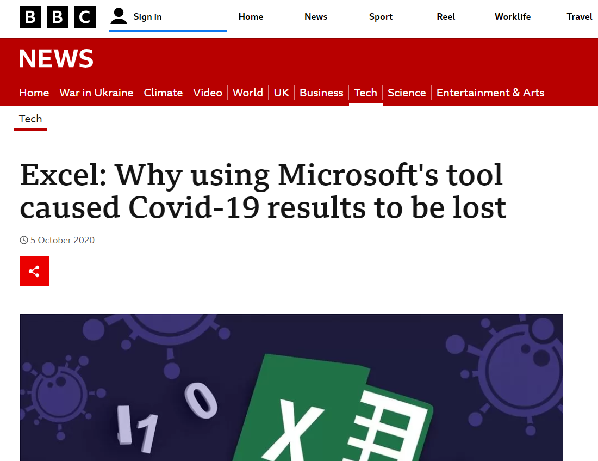Some advice on cleaning data
Some advice on cleaning data
Apply common transformations:
Here’s how ebay’s 2.3 million transactions look with a log transformation:
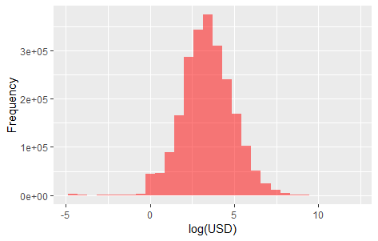
Some advice on cleaning data
Use robust statistics (an entire field in Statistics):
For example the Median is much more robust to extreme values than the mean:
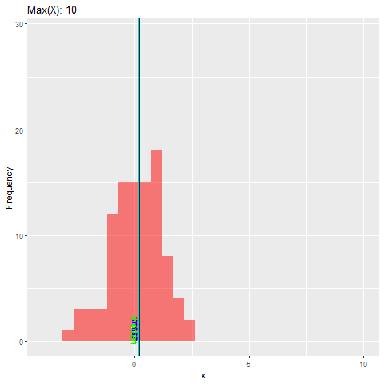Some advice on cleaning data
Tidy your data:
Each variable is a column, each observation is a row, and each type of observational unit is a table. (Hadley Wickham)
Untidy (wide):
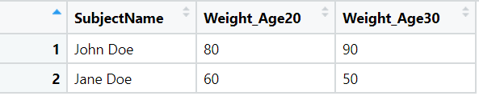
Tidy (long):
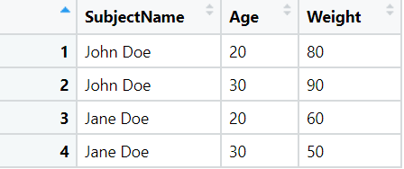